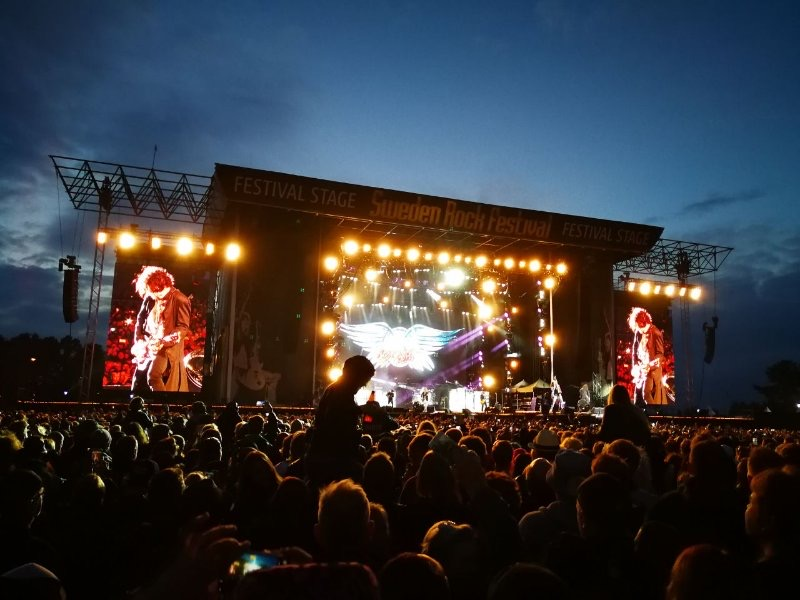

By Cassie
What does a Serbia LED display importer need to know? Importing LED displays into Serbia means routing cargo through a neighbouring port because the country is landlocked, clearing goods through the Serbian customs administration, applying the national conformity mark under the technical requirements law, and specifying equipment for a continental climate. This 2026 guide explains each step.
Serbia is a landlocked market of around six and a half million people with a growing retail, banking, and events sector, and it holds candidate status for European Union membership. Almost every professional LED screen is imported from Asia, and the country's inland position shapes the logistics more than anything else.
A Serbia LED display importer who plans the inland leg, confirms the conformity route, and prepares the customs file in advance clears cargo without difficulty. The two factors that most often delay a project are the port-to-door leg and the question of which conformity regime applies.
Serbia is not a member of the European Union and has no seaport, so cargo is discharged at a neighbouring port and moved overland under a transit procedure. The main routes are the Croatian port of Rijeka, the Romanian port of Constanta, the Montenegrin port of Bar, and the northern European ports reached by road or rail.
Serbia also has river access. The Danube is navigable through the country, and the ports of Belgrade and Novi Sad connect by inland waterway to the Black Sea, which is a genuine option for heavy or bulky project freight.
Customs is administered by the Serbian Customs Administration, and declarations are filed electronically. The importer must register for a tax identification number and, where the goods move under transit, provide a guarantee that covers the duty until the procedure is discharged.
| Step | What Is Required | Who Handles It |
|---|---|---|
| Tax registration | Tax identification number for the importer | Importer |
| Discharge at a neighbouring port | Transit procedure into Serbia | Freight forwarder or broker |
| Transit guarantee | Cover for the duty while in transit | Forwarder or importer |
| Customs declaration | Electronic entry at the inland office | Customs broker |
| Duty and VAT | Assessed on the customs value | Importer |
| Conformity evidence | Where a technical regulation applies | Supplier, verified by importer |
| Inland transport | Delivery from the border to site | Importer or carrier |
Serbia regulates product conformity through the law on technical requirements for products and conformity assessment, which is aligned in structure with the European Union approach. Standards are prepared by the Institute for Standardization of Serbia, and conformity assessment bodies are accredited by the Accreditation Body of Serbia.
Serbia is not a European Union member state, so CE marking alone does not discharge the national obligation, although the test evidence prepared for a European project is normally the same evidence used to support the Serbian assessment. Confirm the position for the specific product and the specific regulation rather than assuming that a general rule applies.
| Requirement | What It Covers | Evidence to Hold |
|---|---|---|
| Serbian conformity mark | Conformity with the national technical regulation | Marked product and conformity declaration |
| Declaration of conformity | The specific model placed on the market | Declaration naming the model |
| Safety test report | Electrical safety | Report naming the offered model |
| EMC test report | Electromagnetic compatibility | Report naming the offered model |
| Accredited certification | Assessment through an accredited body | Certificate with accreditation details |
| Technical file | Drawings and specifications | Complete file held by the importer |
Duty is assessed on the customs value, normally the transaction value adjusted to the agreed Incoterm. Value added tax applies on the duty-paid value at the standard rate, which covers most goods and most business-to-business sales.
| Cost Element | Basis | Notes |
|---|---|---|
| Customs duty | Commodity code and value | Preferential rates may apply under a trade agreement |
| Value added tax | Value plus duty | Standard rate applies to most goods |
| Transit guarantee | Cover for the duty in transit | Released when the procedure is discharged |
| Broker fee | Per declaration | Varies by broker and volume |
| Border and terminal handling | Per shipment at each crossing | Multiple crossings add cost |
| Inland transport | By distance from the port | Confirm delivery to site |
| Storage and demurrage | Per day after the free period | Mounts if the file is incomplete |
Importers work through a licensed customs broker who files the declaration and manages the transit and entry formalities. Choose a broker who clears electronic goods and who regularly handles the route you intend to use, because the border points on the Rijeka, Constanta, and Bar corridors have different procedures and different queue conditions.
Confirm the consignee details on the transport document against the importer of record. A mismatch between the party named on the transport document and the party filing the entry is a common cause of delay on an inland route, where the container may be sitting in a bonded yard rather than at a port.
Serbia has a temperate continental climate with cold winters that bring sustained frost and snow and warm summers that push above thirty degrees. The mountainous south and the highland areas are colder and carry heavier snow loads than the lowland north around Belgrade and Vojvodina.
For Serbian sites, low winter temperatures make cabinet construction and sealing the deciding factors — the X Series uses standard 500×500mm cabinets with front/rear service, and the COB EF outdoor series is sealed against snow-melt and moisture ingress.
| Condition | Risk | Specification Response |
|---|---|---|
| Winter frost and snow | Mechanical load and cold-start stress | Rated operating range and snow-load design for the mount |
| Summer heat | Thermal stress on power supplies | Higher temperature rating and derating plan |
| Wide seasonal temperature swing | Condensation on cold components | Sealed cabinets and controlled ventilation |
| Wind loading on elevated structures | Structural failure of the mount | Engineered steelwork to the local wind load |
| Summer storms and lightning | Surge damage to driver electronics | Surge protection on the incoming supply |
| 230 volt supply | Wrong input configuration | Supplies configured for the local voltage |
Because Serbia is landlocked, the total lead time includes a sea leg to a neighbouring port and an overland leg to the destination. The overland leg can be shortened by choosing a closer port, but a closer port may carry a slower sea service or a higher freight rate.
| Stage | Typical Duration | What Can Delay It |
|---|---|---|
| Production | 15 to 25 working days | Component availability and queue |
| Inland to port and export | 3 to 5 days | Booking availability |
| Sea freight to the discharge port | Varies by routing | Carrier schedule and transshipment |
| Transit through the border | 2 to 5 days | Border queue and document checks |
| Import clearance | 2 to 5 days | Classification and valuation queries |
| Inland delivery | 1 to 4 days | Distance and road conditions |
| Total | Approximately 7 to 10 weeks | Add a buffer for the winter |
Add at least two weeks of buffer beyond the quoted transit time, and more in winter, when road conditions on the mountain corridors slow the overland leg. A screen tied to an opening date has no room to absorb that delay.
Ask every candidate the same questions and record the answers. For Serbian projects the conformity position, the voltage configuration, and the ability to ship to an inland destination matter as much as the price.
| Question | What a Strong Answer Looks Like | Warning Sign |
|---|---|---|
| Conformity for this model | Evidence that supports the national assessment | Evidence promised later |
| Voltage configuration | Supplies built for 230 volts | One configuration offered for all markets |
| Inland shipping experience | Named routes and forwarders used | No inland experience |
| Packaging standard | Crating method described for sea and road | Not addressed |
| Spare parts availability | Stated period in writing | No commitment given |
| Service response | Stated time by fault severity | Answer avoided |
Each mistake is inexpensive to avoid during planning and costly after the goods land. A Serbia LED display importer who plans the inland route, confirms the conformity position, and specifies for the climate avoids most of them.
Asia Vision Technology manufactures LED displays in Shenzhen and supplies importers, distributors, and contractors across the Balkans and Central Europe. The factory prepares the test documentation that supports a national conformity assessment, builds cabinets to the voltage and climate of the destination, and holds spare parts for the stated warranty period.

Related reading: Event and rental LED screens in Vietnam